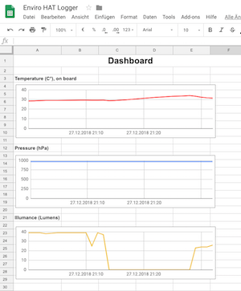

Jeder Entwickler, der eher im Backend und Logik anstatt an der Oberfläche schaffen will hat einen Nemesis: Graphen.
Diese Datendarstellungsform hat jedoch einen ließen Vorteil. Man erkennt schnell Trends auch bei einer großen Anzahl an Werten.

Aus diesem Grund habe ich mal ein bisschen mit der Google Sheets API experimentiert. Der Träger war wie so oft ein Raspberry Pi B und als Sensor kam der Enviro-HAT von Pimoroni zum Einsatz. Dieser bringt bereits eine extrem einfache Library mit welche sich bequem über pip installieren lässt.
Da es mir um Rapid Prototypen geht und meine Python-Fähigkeiten sich am Besten mit “äussert rudimentär” bezeichnen lassen, nutze ich das, nach Google Ranking und Github Stars zu beurteilen, beliebte Paket gspread von burnash.
Das Python-Skript liegt zur Ansicht in einem Repository auf Github bereit. Über “so geht es besser / einfacher / bequemer“-Issues und Pull Requests würde ich mich wie immer freuen.
Obacht: Das Skript allein ist nicht funktionsfähig. Wie im Repository beschrieben, benötigt man einen Google Account mit entsprechend aktivsten Google Drive und Google Sheets API als auch ein Client Secret Json-Datei aus der Google Developer Console.
Es geht einfacher als gedacht wobei ich für mich normale Szenarien wie “Füge am Schluss neue Zeile ein” nicht in der API wiedergefunden habe. Der Workaround, dass ich mir die letze Zeile ausrechne funktioniert nur, wenn in diesem Tabellenblatt der Rohdaten keinerlei händischen Daten abseits der Kopfzeile eingetragen sind.
Als auch stellte ich fest, dass am Enviro-HAT der Temperatursensor etwas zu nah über dem Prozessor des Raspberry Pis legt. Somit sind verständlicherweise keine realen Temperaturwerte ablesbar. Hierbei wäre jedoch eine Deltawert-Analyse um generelle Trends zu erkennen sinnvoller als die absoluten Messwerte.
Back